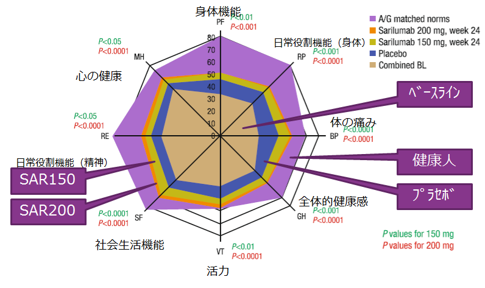

6. KEVはPROを改善する？

KEVは疾患活動性だけでなくPtGA pain、HAQ-DI、SF-36、FACIT-F scoreのPROsをプラセボ群に比較して優位に改善、52週まで維持することが「MOBILITY試験」で報告されています。
- ●MOBILITY StudyのPROsの解析結果
- ●方法：RA患者1197名をプラセボ、サリルマブ150㎎、サリルマブ200㎎に分け、MTX併用で2週間毎52週間使用。
- ●結果：サリルマブ150㎎、サリルマブ200㎎ともに24週時PtGA,pain,
HAQ-DI,SF-36,FACIT-F scoreをプラセボ群に比べ有意に改善し、52週まで維持した
150mg /200mgともに、SF-36の8項目全てでプラセボ群に比べて有意に改善している
24週時のSF-36各項目
